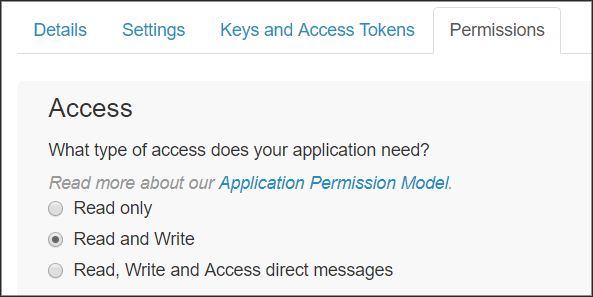
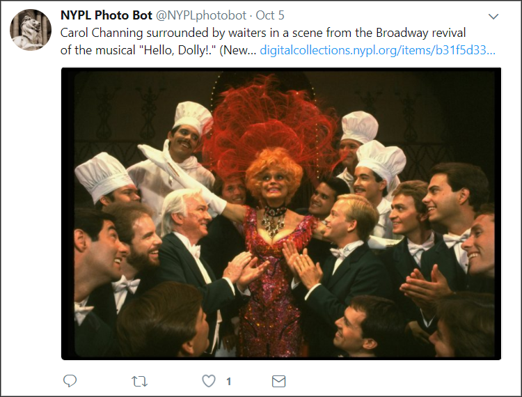
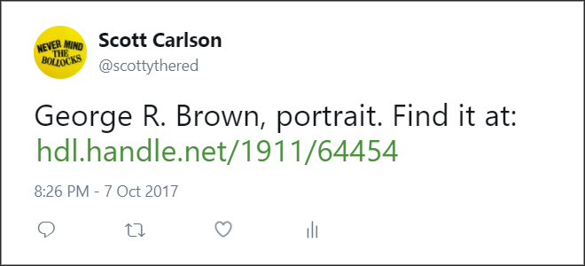
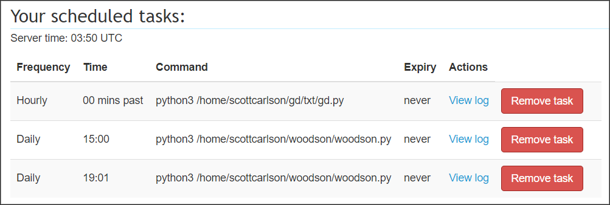

Yeah, why not? Despite the bad rap bots are deservedly getting, Twitter bots can either be entertaining or a source of good, especially for galleries, libraries, archives, and museums with digital collections. I’ve found the general public doesn’t understand what cool things can be found in digital repositories and archives, much less know they exist. We can work to change that by putting our collections out there in a public setting for people to discover. In the process, you’ll build a Twitter bot from the ground-up and get a taste of programmatic thinking (if that sort of thing sounds like your bag).
First of all, if you haven’t already, you’ll need to set up developer access on your Twitter account. Sign in with your account and start setting up a new ‘app.’ What you’re after here is obtaining the four unique codes we’ll need to start tweetin’ programmatically:
Treat these four codes like the passwords that they are.
You’ll also need to minimally set your ‘Permissions’ tab to ‘Read and Write Access’:

If you already have Python, great – skip to the next step. If you’re not sure, open whatever shell environment you have and type python --version.
If you don’t find Python, you’ll need to follow the steps here to get Python installed. (I would recommend you Live In The Now and get Python 3, but YMMV.)
Python is a “batteries included” computer programming language. More concretely, Python is a programming language that, in contrast to other programming languages, allows users to more readily focus and solve domain problems instead of dealing with the complexity of how a computer operates. (Source)
Not at all! Programmatic tweeting can be done in lots of other languages.
Nope. At this time, Python is my main language of operation.
Now that we have Python installed, it’s time to get Tweepy in here. Type this into the shell:
pip install tweepy
This will install Tweepy, a Python library that facilitates interactions with the Twitter API. Once we install Tweepy, Python Twitter scripting becomes exponentially easier. To wit:
from tweepy import OAuthHandler
from tweepy import API
consumer_key="xxxxxxxxxxxxxxxxxxxxxxxxx"
consumer_secret="xxxxxxxxxxxxxxxxxxxxxxxxxxxxxxxxxxxxxxxxxxxxxxxxxx"
access_token="xxxxxxxxxxxxxxxxx-xxxxxxxxxxxxxxxxxxxxxxxxxxxxxxxx"
access_token_secret="xxxxxxxxxxxxxxxxxxxxxxxxxxxxxxxxxxxxxxxxxxxxxxxxxx"
auth = OAuthHandler(consumer_key, consumer_secret)
auth.set_access_token(access_token, access_token_secret)
api = API(auth)
This above script header essentially readies your keys and tokens into place for making calls to the Twitter API. Once we have this set up in a Python script, the Twitter world is our oyster. (Of course, you’ll replace the X values with your actual keys and tokens.)
Say, for example, we want to get the actual text of what this account has already tweeted, all we would need to append to the above is:
public_tweets = api.home_timeline()
for tweet in public_tweets:
print(tweet.text)
Let’s get to the main event: tweeting via the API. It’s actually incredibly simple, so let’s do your first API transmission:
from tweepy import OAuthHandler
from tweepy import API
consumer_key="xxxxxxxxxxxxxxxxxxxxxxxxx"
consumer_secret="xxxxxxxxxxxxxxxxxxxxxxxxxxxxxxxxxxxxxxxxxxxxxx"
access_token="xxxxxxxxxxxxxxxxx-xxxxxxxxxxxxxxxxxxxxxxxxxxxxxxx"
access_token_secret="xxxxxxxxxxxxxxxxxxxxxxxxxxxxxxxxxxxxxxxxxx"
auth = OAuthHandler(consumer_key, consumer_secret)
auth.set_access_token(access_token, access_token_secret)
api = API(auth)
tweet = "Hello, world!"
api.update_status(tweet)
As you can see, we set our new tweet as the variable tweet and used the api variable to send it out as a status update.
So, what if you had a thousand or so ready-made tweets? You could rewrite this script to tweet them periodically. This is precisely why G/L/A/M digital collections are ripe for Twitter bots – all you need is a modified script and a butt-load of solid metadata to start promoting your data.
For example, let’s set up a list of tweets we want to send. Each tweet includes the description of a digital collection item along with the link to the item. We’ll store these tweets in a JSON file, with each tweet being a value of an array:
[json file name]:
{
"tweets": [
"Lecture in Faculty Chamber, at Formal Opening of Rice Institute. Find it at: http://hdl.handle.net/1911/64453",
"George R. Brown, portrait. Find it at: http://hdl.handle.net/1911/64454",
"Rice Institute Commencement procession. Find it at: http://hdl.handle.net/1911/64457",
"Rice University Commencement procession. Find it at: http://hdl.handle.net/1911/64460",
"Rice University Commencement group of graduates. Find it at: http://hdl.handle.net/1911/64461",
"Rice University Commencement, view of graduates through the Sallyport, Lovett Hall. Find it at: http://hdl.handle.net/1911/64468",
"College Bowl, view of participants at panel. Find it at: http://hdl.handle.net/1911/64470"
]
}
Let’s modify our existing script to parse the JSON file to get the tweets. First, we’ll need to add to the header:
from tweepy import OAuthHandler
from tweepy import API
import json
Then, below the API calls, we replace our ‘Hello, World!’ command with:
# opens our JSON file
json_input = open('[json file name]')
# loads our JSON file
data = json.load(json_input)
# selects the specific node from the JSON
tweets = data["tweets"]
for tweet in tweets:
api.update_status(tweet)
This will tweet out each individual status update in quick succession. Of course, we don’t want this to happen – we need to space out our tweets so that we don’t run out of tweet material, and we don’t want to incur the wrath of Twitter’s API usage limits. We’ll need to pause in between each tweet.
Luckily, Python comes with a module called time that will allow us to suspend the script in between tweets, using the sleep command.
Let’s update the header again:
from tweepy import OAuthHandler
from tweepy import API
import json
from time import sleep
…And let’s add the sleep module after each tweet:
for tweet in tweets:
api.update_status(tweet)
sleep(1800)
(The sleep command is measured in seconds; 1,800 seconds equals a tweet every 30 minutes.)
The entire script looks like this:
from tweepy import OAuthHandler
from tweepy import API
import json
from time import sleep
consumer_key="xxxxxxxxxxxxxxxxxxxxxxxxx"
consumer_secret="xxxxxxxxxxxxxxxxxxxxxxxxxxxxxxxxxxxxxxxxxxxxxx"
access_token="xxxxxxxxxxxxxxxxx-xxxxxxxxxxxxxxxxxxxxxxxxxxxxxxx"
access_token_secret="xxxxxxxxxxxxxxxxxxxxxxxxxxxxxxxxxxxxxxxxxx"
auth = OAuthHandler(consumer_key, consumer_secret)
auth.set_access_token(access_token, access_token_secret)
api = API(auth)
json_input = open('[json file name]')
data = json.load(json_input)
tweets = data["tweets"]
for tweet in tweets:
api.update_status(tweet)
sleep(1800)
So we’re basically done, right? Well… it depends. Let’s take a look at the Twitter bot NYPLphotobot, built by John Emerson – specifically this tweet. The entirety of the tweet’s text is:
Carol Channing surrounded by waiters in a scene from the Broadway revival of the musical "Hello, Dolly!." (New… https://digitalcollections.nypl.org/items/b31f5d33-7c14-17da-e040-e00a18062482
When the tweet is posted, however, a photo preview appears:

That’s because the item page at the New York Public Library’s Digital Collection contains a robust set of metadata. If you open up the page’s source code, you’ll see that metadata in the page’s header meta tags:
<meta property="og:image" content="http://images.nypl.org/index.php?id=swope_277479&t=w" />
<meta property="og:title" content="Carol Channing surrounded by waiters in a scene from the Broadway revival of the musical "Hello, Dolly!." (New York)" />
<meta property="og:description" content="One of hundreds of thousands of free digital items from The New York Public Library." />
<meta property="og:url" content="http://digitalcollections.nypl.org/items/b31f5d33-7c14-17da-e040-e00a18062482" />
<meta property="og:type" content="website" />
<meta property="og:site_name" content="NYPL Digital Collections"/>
<meta name="twitter:site" content="@nypl">
<meta name="twitter:title" content="Carol Channing surrounded by waiters in a scene from the Broadway revival of the musical "Hello, Dolly!." (New York)">
<meta name="twitter:description" content="One of hundreds of thousands of free digital items from The New York Public Library.">
<meta name="twitter:card" content="summary_large_image">
<meta name="twitter:image" content="http://images.nypl.org/index.php?id=swope_277479&t=w">
<meta name="twitter:creator" content="@nypl">
The og: prefixes denote Open Graph tags, which enable web pages to become “rich objects” in social media. These are followed by twitter: tags, which are based on the same conventions as Open Graph protocol. When used together, these tags create preview cards when a link is tweeted out. (For more information, see here.)
The short version of this story is, if your digital collection’s item pages don’t have such meta tags, your tweets will lack the kind of preview seen in the NYPL bot, because there won’t be tags like og:image or twitter:image for Twitter to grab a preview image. To wit:

This is obviously a problem, because as we discussed above, visuals help send people to links.
If your digital collection is set up to where you can easily predict a direct link to the image for each collection item, then it’s GOOD NEWS! We can work our way around this issue with an expanded script.
Using our previous JSON example as a starting point, we’ll create an array of JSON objects that include the texts of our tweets along with the direct link to our images:
{
"tweets":[
{
"text":"Lecture in Faculty Chamber, at Formal Opening of Rice Institute. Find it at: http://hdl.handle.net/1911/64453",
"img":"https://scholarship.rice.edu/bitstream/handle/1911/64453/wrc00005.jpg"
},
{
"text":"George R. Brown, portrait. Find it at: http://hdl.handle.net/1911/64454",
"img":"https://scholarship.rice.edu/bitstream/handle/1911/64454/wrc01588.jpg"
},
{
"text":"Rice Institute Commencement procession. Find it at: http://hdl.handle.net/1911/64457",
"img":"https://scholarship.rice.edu/bitstream/handle/1911/64457/wrc01693.jpg"
},
...
]
}
(This method assumes that each of your collection’s objects have a single image that can be predictably linked to. If your objects tend to have more than one image, you’ll need to account for this in advance, and select only one of them to be posted.)
Our script, of course, is going to be slightly more complicated. We’ll need to update the script header with two new modules, urllib.request and os:
from tweepy import OAuthHandler
from tweepy import API
import json
from time import sleep
import urllib.request
import os
The beginning of the script looks the same…
json_input = open('[json file name]')
data = json.load(json_input)
…But below, we have more going on:
for x in data['tweets']:
# When the script is run, the linked image for each tweet is downloaded locally:
urllib.request.urlretrieve(x['img'], 'image-temp.jpg')
filename = ('image-temp.jpg')
# The script sends the tweet and the image, as a status/media update:
api.update_with_media(filename, status=x['text'])
# Once finished, the downloaded image is purged:
os.remove(filename)
sleep(1800)
Once again, the whole script:
from tweepy import OAuthHandler
from tweepy import API
import json
from time import sleep
import urllib.request
import os
consumer_key="xxxxxxxxxxxxxxxxxxxxxxxxx"
consumer_secret="xxxxxxxxxxxxxxxxxxxxxxxxxxxxxxxxxxxxxxxxxxxxxx"
access_token="xxxxxxxxxxxxxxxxx-xxxxxxxxxxxxxxxxxxxxxxxxxxxxxxx"
access_token_secret="xxxxxxxxxxxxxxxxxxxxxxxxxxxxxxxxxxxxxxxxxx"
auth = OAuthHandler(consumer_key, consumer_secret)
auth.set_access_token(access_token, access_token_secret)
api = API(auth
json_input = open('[json file name]')
data = json.load(json_input)
for x in data['tweets']:
urllib.request.urlretrieve(x['img'], 'image-temp.jpg')
filename = ('image-temp.jpg')
api.update_with_media(filename, status=x['text'])
os.remove(filename)
sleep(1800)
Of course, JSON isn’t the only way to do this. You could set a script to read from a CSV with two columns, img and tweet:
from tweepy import OAuthHandler
from tweepy import API
import urllib.request
import os
import csv
from time import sleep
consumer_key="xxxxxxxxxxxxxxxxxxxxxxxxx"
consumer_secret="xxxxxxxxxxxxxxxxxxxxxxxxxxxxxxxxxxxxxxxxxxxxxx"
access_token="xxxxxxxxxxxxxxxxx-xxxxxxxxxxxxxxxxxxxxxxxxxxxxxxx"
access_token_secret="xxxxxxxxxxxxxxxxxxxxxxxxxxxxxxxxxxxxxxxxxx"
auth = OAuthHandler(consumer_key, consumer_secret)
auth.set_access_token(access_token, access_token_secret)
api = API(auth
csvfile = open('[csv file name]')
reader = csv.reader(csvfile)
next(reader)
for img, tweet in reader:
urllib.request.urlretrieve(img, 'image-temp.jpg')
filename = ('image-temp.jpg')
api.update_with_media(filename, status=tweet)
os.remove(filename)
sleep(1800)
If you’re planning on setting up a Twitter bot for your G/L/A/M collection(s), chances are you have quite a few things to share with the world. It would be quite easy to set up thousands of tweets ready to go for programmatic tweeting however, if you haven’t noticed yet, the above scripts are intended to be left open as the script loops through all of the tweet data from start to finish. If you have thousands of tweets to send, this means you will have a very lengthy, open-ended shell session that you won’t be able to close. If you do close it and re-run the script the later, it will start over from the top and attempt to send out tweets that have already been sent. (Luckily, or sadly depending on your viewpoint, Twitter does not allow the same tweet to be programmatically tweeted.) So unless you can guarantee the computer running this script will never need to be restarted, you might need another approach.
One method is to set up a secondary text file, which will act as a log of sorts. In the same directory as your JSON tweet data, create a plain-text file called index.txt. Open index.txt and type a zero (‘0’). Save the file.
Now that we have an index file, we can modify our script to do the following:
A script utilizing this method could look like this:
from tweepy import OAuthHandler
from tweepy import API
import urllib.request
import os
import json
consumer_key="xxxxxxxxxxxxxxxxxxxxxxxxx"
consumer_secret="xxxxxxxxxxxxxxxxxxxxxxxxxxxxxxxxxxxxxxxxxxxxxx"
access_token="xxxxxxxxxxxxxxxxx-xxxxxxxxxxxxxxxxxxxxxxxxxxxxxxx"
access_token_secret="xxxxxxxxxxxxxxxxxxxxxxxxxxxxxxxxxxxxxxxxxx"
auth = OAuthHandler(consumer_key, consumer_secret)
auth.set_access_token(access_token, access_token_secret)
api = API(auth
with open('index.txt', 'r') as indexNmr:
vari = int(indexNmr.read().strip())
indexNmr.close()
json_input = open('[json file name]')
data = json.load(json_input)
urllib.request.urlretrieve(data['tweets'][vari]['img'], 'image-temp.jpg')
filename = ('image-temp.jpg')
try:
api.update_with_media(filename, status=data['tweets'][vari]['text'])
os.remove(filename)
except:
print('Error, baby.')
with open('index.txt', 'w') as indexNew:
indexNew.write("%d" % (vari_line + 1))
indexNew.close()
The beauty of this method is that the script can run without relying on the sleep function. And since only it only performs one run-through each time, we can now schedule it to run as often or as infrequently as we like.
The easiest way of scheduling this script would probably using crontab:
Crontab (CRON TABle) is a file which contains the schedule of cron entries to be run and at specified times. […] A cron job or cron schedule is a specific set of execution instructions specifing day, time and command to execute. (Source)
To open Crontab in your Unix/Linux shell, type crontab -e and follow the instructions. An example of this script running once a day at 10 am would look like:
0 10 * * * [path to]/python3 [path to]/script.py
Of course, we’re back to the discussion of whether this particular computer will always be on, as to run the cron schedule.
If you’re absolutely paranoid, you might as well pay for a service that will schedule this for you. I currently pay $5 a month for the features of PythonAnywhere, which includes a cron scheduler for my set of virtual Python scripts. Money well spent? I’d say so.

I am Scott Carlson, the Metadata Coordinator of Fondren Library at Rice University. I received my MLIS from Dominican University (River Forest, IL) and an Archives Certificate in Digital Stewardship from Simmons College (Boston, MA). This guide was written to music by James Brown.